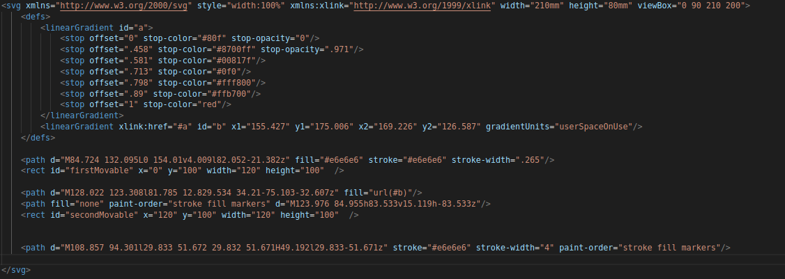

CSS
Izmantojot CSS var mainīt elementa stilu atkarība no tā, vai pele atrodas uz tā. (Ir iespējams izmēģināt uz šī teksta)
Izmantojot CSS, var veidot animācijas.
Animācijā tiek izmantots svg un keyframes. Animācijā tiek pravietoti paslēpti taisnstūri, kas atklāj starus.

Ar CSS var veikt 3D transformācijas.
Paneļi tiek pagriezti un pārvietoti izmantojot transform. Animācija izmanto keyframes.